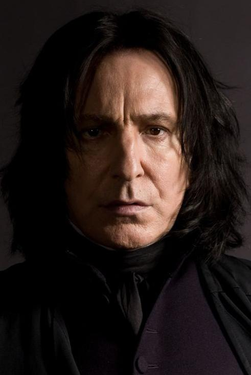

About Severus Snape
Severus Snape (9 January, 1960 – 2 May, 1998) was an English half-blood wizard serving as Potions Master (1981-1996), Defence Against the Dark Arts professor (1996-1997), and Headmaster (1997-1998) of the Hogwarts School of Witchcraft and Wizardry as well as a member of the Order of the Phoenix and a Death Eater. The only child of Muggle Tobias Snape and Gobstones witch Eileen Snape (née Prince), Severus was raised in the Muggle dwelling of Spinner's End, which was in close proximity to the home of the Evans family, though in a poorer area.
Severus Snape's Profile (age of picture unknown)
Major involvement and events
- Severus was made a member of the Slug Club presumably because of his talent in Potion-making. (during his years at Hogwarts)
- Snape diverts Professor Quirrell from gaining access to the Sorcerer's Stone.
- Snape (who was originally part of the death eaters) changed sides and became a member of the Order of the Phoenix as well as a double agent during the Second Wizarding War.
- Snape took part in the Battle of Hogwarts.
- After Snape's death, Harry Potter ensured that his portrait remained at Hogwarts, honouring him as a hero, despite their significant personal differences.
Severus Snape's History
Hogwarts years (1971-1978)